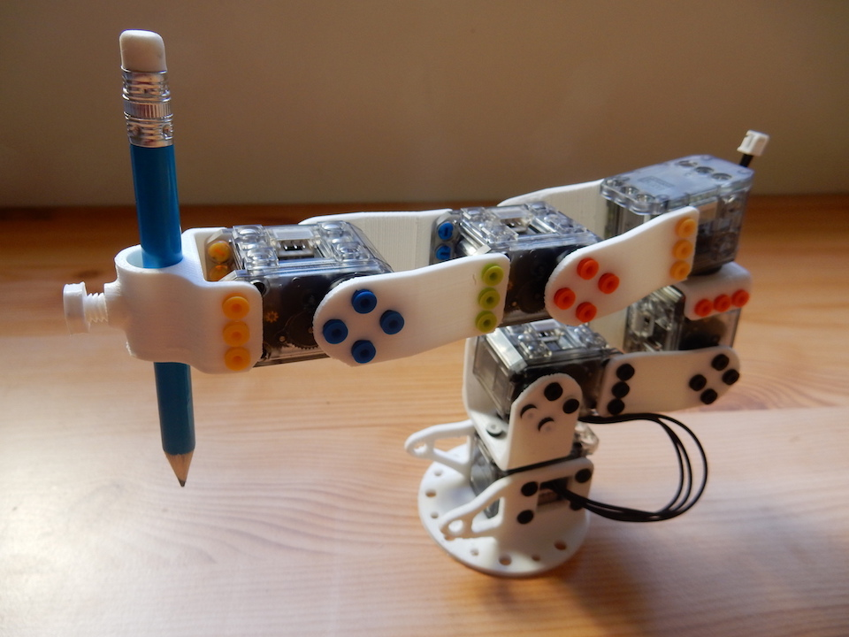
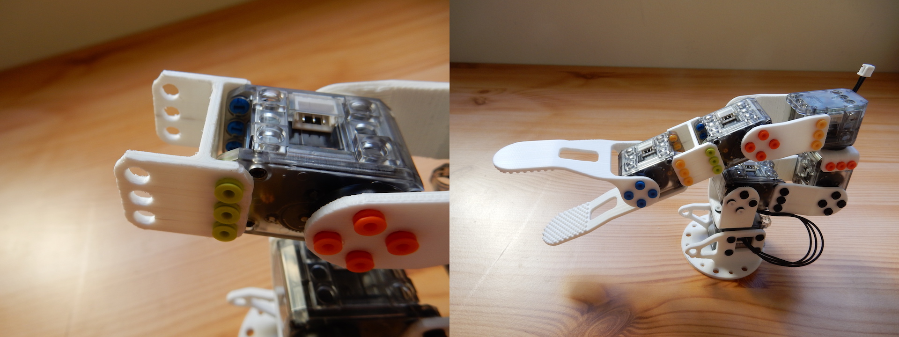
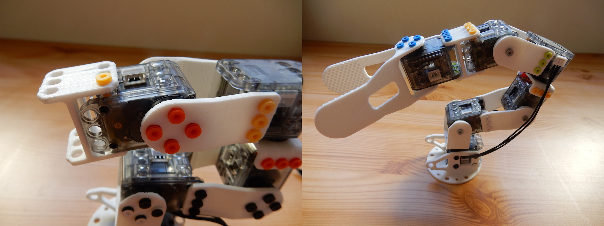
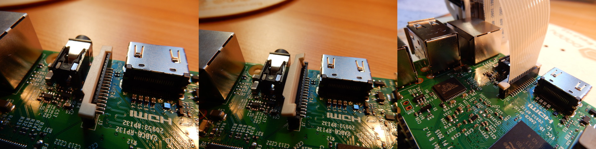
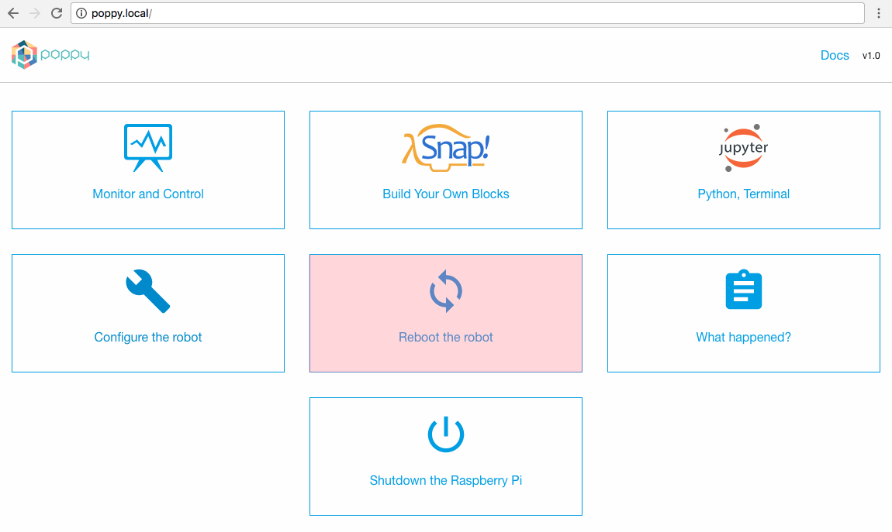
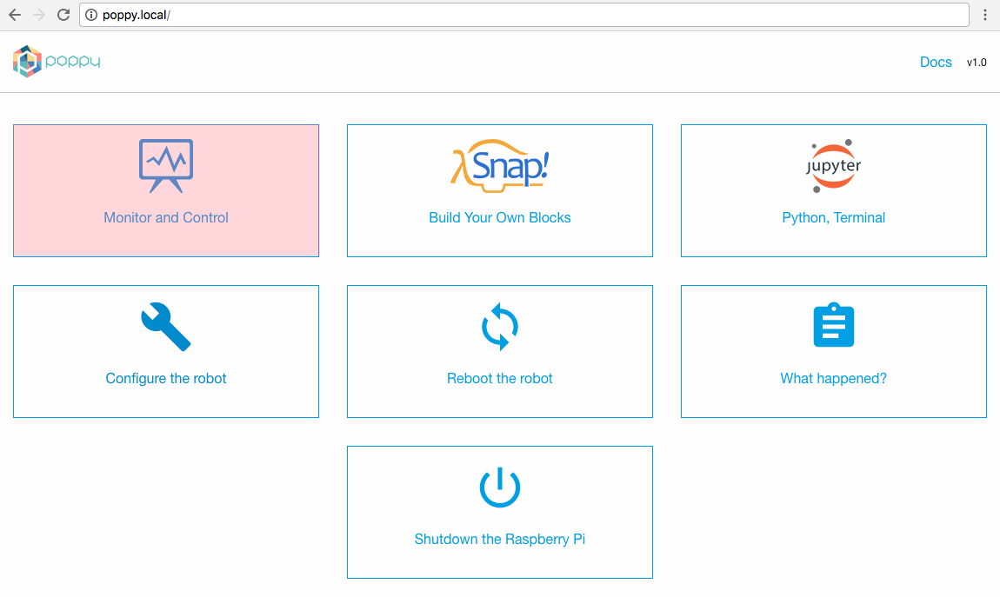
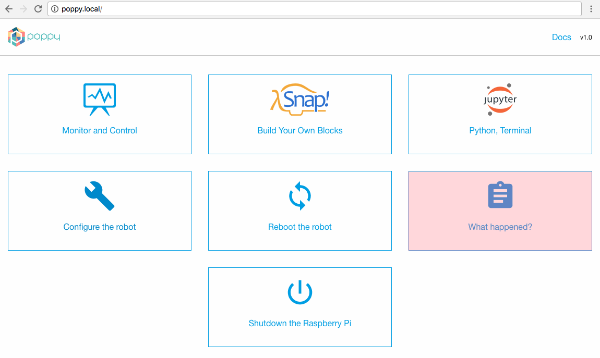

Assemblage mécanique
Avis et avertissements d'ordre général
Toutes les orientations des pièces sont très importantes. Regarez les photos très précisément pour reproduire le même assemblage avec les pièces dans le même sens. Si vous vous trompez, vous vous en rendrez compte car votre robot réalisera des mouvements différents que ceux que vous lui demanderez. Le cas échéant n'ayez pas d'inquiétude, vous pourrez toujours le démonter puis le remonter.
Vous pouvez pré-assembler tous les rivets dont vous avez besoin avant la construction du robot. Chaque rivet consiste en l'assemblage de deux éléments l'un dans l'autre comme ceci :

- Il y a 2 sortes de rivetsThere are two kinds of rivets. The grey ones and the others. Grey rivets are longer to be able to be inserted in the motor axis, at the opposite side of the horn (black revolving circle).

- Utilisez l'outil OLLO pour pouvoir monter et démonter les rivets facilement.

N'oubliez pas de passer les fils pendant l'assemblage de votre robot. Chaque moteur, excepté le dernier doit avoir ses 2 connecteurs occupés: l'un connecté au moteur précédent, l'autre connecté au moteur suivant. Il n'y a cependant pas d'importance quant-à quel connecteur est connecté au moteur suivant ou précédent.
Alignez toujours le palonnier (la roue d'entrainement noire) avec le moteur avant de les assembler ! Sinon votre Poppy Ergo Jr aura l'air tout à fait bizarre.

- Tous les palonniers des moteurs (la roue d'entrainement noire) doivent être alignés sur le côté gauche du robot. C'est juste une convention mais elle définira l'orientation de vos moteurs.

Guide pas à pas
Configuration des moteurs
Les moteurs doivent être individuellement configurés. Vous pouvez faire cela avant ou après la construction de votre robot mais dans la mesure ou cela nécessite d'avoir un seul moteur branché à la carte Pixl à la fois, il est généralement plus pratique de configurer les moteurs un-par-un, se souvenir du nom qu'il leur a été attribué, et assembler ce moteur au bon endroit dans le robot ensuite.
Pour configurer les moteurs, vous devez les connecter séparément un par un à la Raspberry Pi. Si vous essayez de configurer un nouveau moteur alors qu'il est connecté avec le moteur précédent, cela ne fonctionnera pas.
Pour plus d’informations, consultez la section configuration de moteur.
Etape 1 - motor 1
Tout d’abord, démarrez votre robot et configurez un moteur XL-320 sous le nom « m1 ».
Montez ensuite le moteur sur la base imprimée en 3D.

Pour cela, préparez 8 petits rivets. Placez la première partie dans la seconde sans les mettre à l'intérieur du moteur. Ensuite, placez le moteur sur la base avec le palonnier (= la roue du moteur) faisant face au côté le plus ouvert. Utilisez l'outil Ollo pour attraper le rivet entre la première et la seconde partie du rivet puis insérez le rivet dans un des trous d'assemblage. Une fois le rivet en place, verrouillez-le en poussant la première partie du rivet vers la seconde.
Étape 2 - moteur 2
Configurez le second moteur, son nom est « m2 », avec la commande suivante dans un terminal du robot :
poppy-configure ergo-jr m2
Monter la partie long_U. Soyez prudent avec l’orientation de la la pièce, le palonnier doit être orienté vers la gauche. Monter le moteur « m2 » sur le dessus de la construction.

Étape 3 - moteur 3
Configurer un troisième moteur nommé « m3 ».
Monter les pièces horn2horn et horn2side sur moteur « m2 » et monter « m3 » sur le dessus de la construction. 
Étape 4 - moteur 4
Configurer le quatrième moteur nommé « m4 ».
Monter la pièce short_U sur le moteur 4. 
Monter le moteur « m4 » et la pièce short_U préalablement assemblée au sommet de la construction. Le nez du moteur doit être orienté vers l'arrière de la base. 
Étape 5 - moteur 5
Configurer le cinquième moteur nommé « m5 ».
Monter les pièces horn2horn et horn2side sur moteur « m4 » et monter « m5 » sur le dessus de la construction.

Étape 6 - l’outil de votre choix
Configurer le sixième moteur nommé « m6 ».
Pour terminer votre Ergo Jr, vous devez ajouter un outil à son extrémité. Choisissez un outil en fonction de ce que vous souhaitez faire.
Les outils peuvent être facilement et rapidement changés, ce qui vous permet d'adapter votre robot aux différentes activités.
L'abat-jour ou le stylo
Monter les pièces horn2horn et horn2side sur moteur « m5 » et monter « m6 » sur le sommet de la construction. 
Vous pouvez monter le support de stylo ou de l’abat jour sur le moteur « m6 ». 
In the same way you mount the lampshade, you can also mount the pen holder. 
La pince
Mount the gripper-fixation between motors "m5" and "m6".
Mount gripper-fixed_part and gripper-rotative_part on motor "m6".
There is two way to mount the gripper, vertically 
Or Horizontally 
Étape 7 - électronique
Mount the support_camera part on the base. Fix the Raspberry Pi camera on it and move the camera flex cable between motor "m1" and the base. 
Camera flex wire
To fix the flex cable of the camera on the Raspberry Pi: open the camera connector by pulling on the tab to the top make sure that connectors on the flex cable are facing away of the Ethernet port * push the flex on the port, and push the plastic tab down to close it 
Motors wires:
If it is not already done, you can plug every motors wires. Every motor has two connectors but there is no input or output: you just have to create a chain of motors. The first motor is linked to the pixl and the second motor; the last motor is linked only to the previous one, and every other motors are linked to the one above and ahead.
Les connecteurs du moteur « m1 » (à la base) sont un peu difficiles à brancher, vous pouvez utiliser l’outil OLLO pour vous aider.

Étape 8 - fixer votre Ergo Jr sur le disque de support en bois
Mount your Ergo Jr to the wood disk-support.
Mount the Raspberry Pi to the disk support, and use 4 x M2.5x6mm screw to fix it.
Step 9 - test your Robot !
Congratulation, you achieve the robot assembly! Now, it is almost done, it is time to test it!
Go to your robot home page http://poppy.local.
Click on Reboot the robot button to be sure that the robot software was started with all motors wired in. 
You can go to the monitor, click on Monitor and Control button. 
If the robot software is correctly started, you should see the green connection logo, otherwise it will be red. 
You can start a pre-defined behavior by clicking on the play logo.
If the connection logo is red, you can see what is wrong by looking on messages in What append? page. 
Most of the time, it's because a wire is unplugged or because you forgot to configure a motor.
Done

Grab your favorite drink and relax.